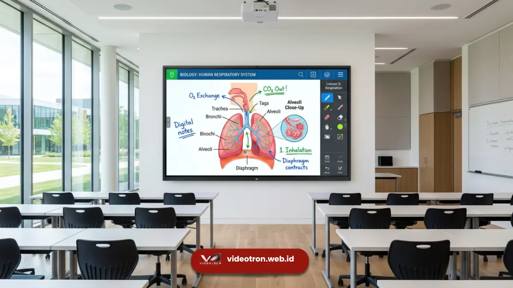

Panduan praktis menentukan resolusi modul LED videotron indoor yang nyaman dipandang mata dan sesuai dengan tata ruang bangunan Anda.
1. Memahami Dasar Pixel Pitch (P) pada Videotron Indoor
Saat Anda hendak memasang videotron di dalam ruangan—baik itu untuk ruang rapat kantor, ballroom hotel, hingga atrium pusat perbelanjaan—salah satu istilah utama yang paling sering ditemui adalah Pixel Pitch yang disimbolkan dengan huruf "P".
Pixel Pitch mengukur jarak kerapatan antara titik-titik lampu LED pada panel videotron dalam satuan milimeter. Makin kecil angka di belakang kode "P" (misalnya P1.8 dibandingkan P3.0), maka makin rapat susunan lampu LED tersebut sehingga menghasilkan gambar visual yang sangat detail dan tajam.
Kerapatan Piksel Halus (P1.5 – P2.0)
Sangat cocok untuk ruangan di mana jarak mata penonton sangat dekat dengan layar. Tampilan tulisan dan gambar tetap jernih tanpa terlihat bintik-bintik piksel.
Kerapatan Piksel Standar (P2.5 – P4.0)
Pilihan efisien dan nyaman untuk ruangan menengah hingga besar di mana audiens menikmati tampilan visual dari jarak lebih jauh.
2. Menyesuaikan Pixel Pitch dengan Jarak Pandang Audiens
Kunci utama dalam memilih Pixel Pitch videotron indoor tidak selalu mencari angka terkecil, melainkan menyesuaikannya dengan jarak posisi duduk audiens terdekat.
Sebagai aturan praktis yang mudah diingat: angka Pixel Pitch menunjukkan jarak pandang minimum yang ideal dalam satuan meter. Jadi, jika penonton paling depan berada pada jarak 2.5 meter dari layar, maka videotron tipe P2.5 sudah sangat ideal untuk memberikan kenyamanan pandangan mata.

Penggunaan layar LED interaktif untuk ruang kelas modern dan aula seminar.3. Contoh Penerapan Pixel Pitch pada Berbagai Ruangan
Setiap jenis ruangan memiliki karakteristik tata letak yang unik. Berikut beberapa panduan praktis untuk mempermudah pemilihan Anda:
Ruang Rapat Executive
Direkomendasikan menggunakan P1.8 s/d P2.0 agar grafik data, teks presentasi, dan video conference terlihat sangat tajam.
Auditorium & Aula Kampus
Direkomendasikan menggunakan P2.5 yang sangat fleksibel dan nyaman dipandang dari jarak 2.5 hingga 10 meter.
Grand Ballroom Hotel
Direkomendasikan menggunakan P3.0 s/d P4.0 untuk memberikan area cakupan visual luas dari panggung ke deretan tamu belakang.
Atrium Mall & Retail
Direkomendasikan menggunakan P2.5 s/d P3.0 untuk menarik perhatian pengunjung yang lalu lalang dengan promosi visual berwarna cerah.
4. Kesimpulan & Saran Konsultasi
Memilih Pixel Pitch videotron indoor tidak perlu rumit. Cukup ketahui jarak pandang terdekat penonton Anda dan pilihlah tipe modul LED yang dapat memberikan tampilan yang jernih dan nyaman tanpa memicu kelelahan mata.
Jika Anda membutuhkan arahan teknis maupun ingin memastikan modul yang paling pas dengan anggaran Anda, tim spesialis Vendor Videotron siap membantu survey lokasi dan diskusi bebas tanpa biaya.

Hawa Nadira
LED Technology Consultant & Visual Educator
Konsultan dan spesialis solusi display digital berdedikasi tinggi yang fokus membagikan panduan edukatif mengenai penerapan teknologi layar LED videotron untuk kebutuhan interior modern di Indonesia.